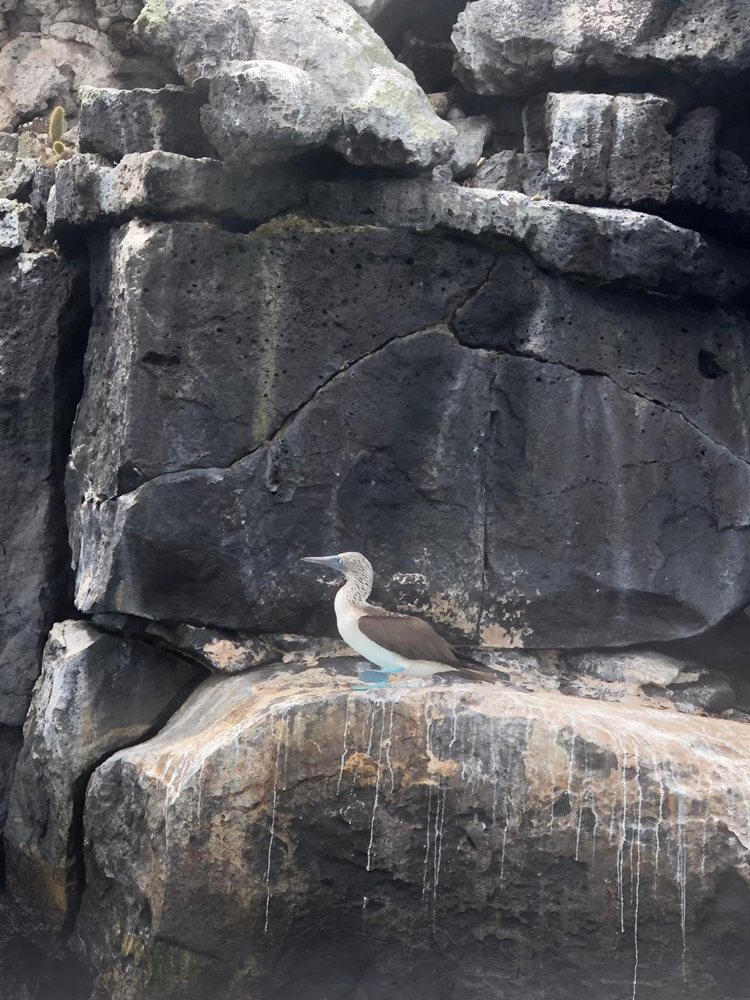
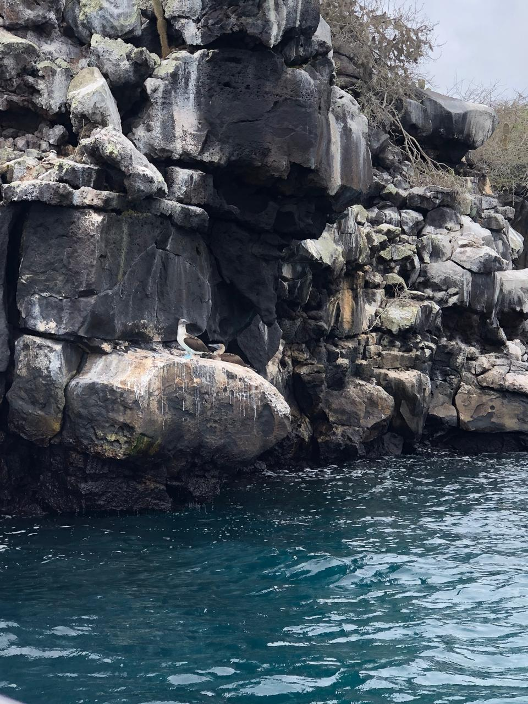
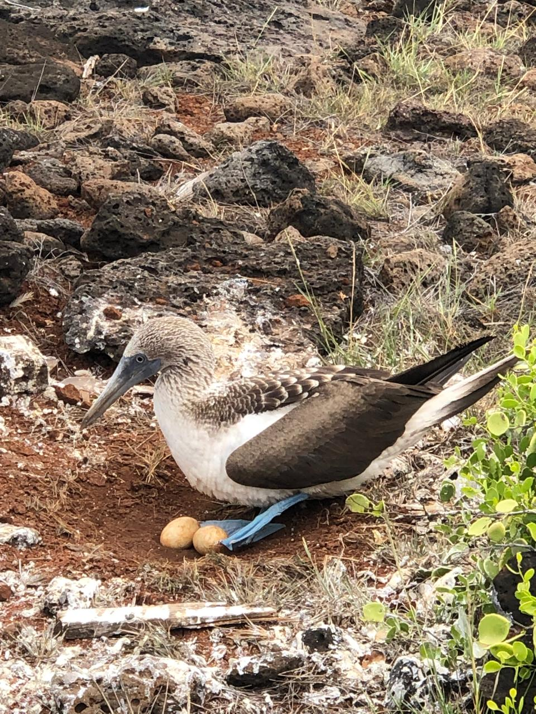
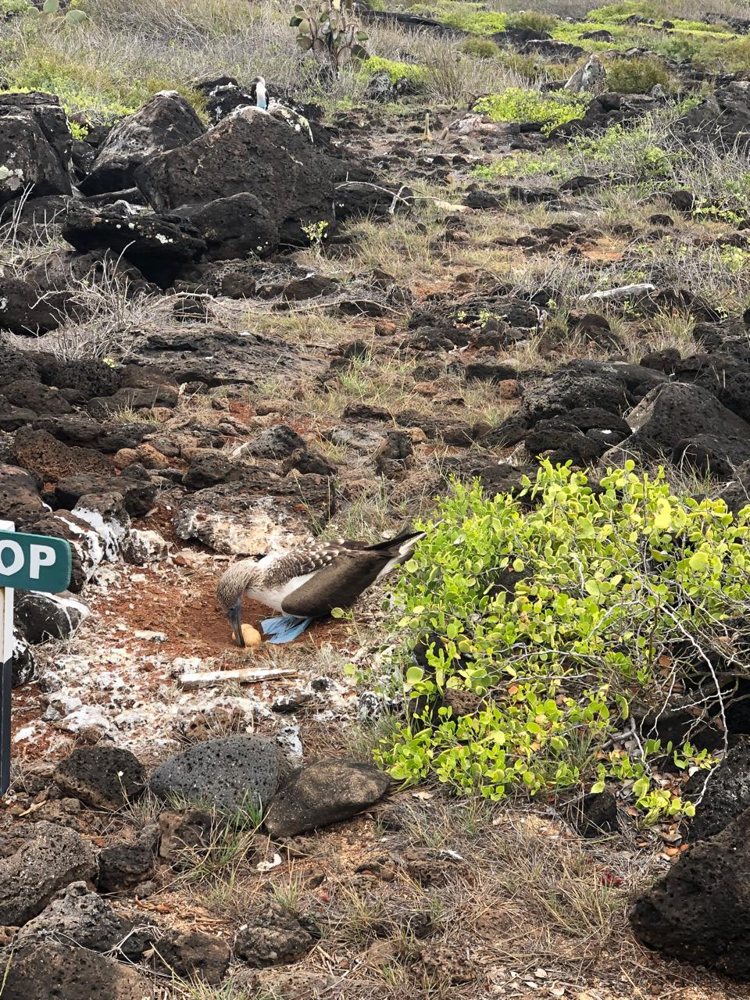

Este proyecto surge a partir de un viaje familiar donde decidí investigar por curiosidad acerca del comportamiento de los piqueros, especialmente sobre la época del año en la que ponen sus huevos y su proceso reproductivo.


Durante esta pequeña investigación pude aprender que los piqueros tienen ciclos reproductivos específicos dependiendo de la especie y del entorno donde viven. También pude observar su comportamiento en grupo y su forma de cuidar sus nidos.

